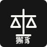

法律知识整理
围绕合同、劳动、人事、合规、日常经营等场景，整理法规依据、常见问题与处理思路。

北京獬豸咨询科技有限公司法律知识服务 · AI辅助咨询
面向需要法律知识服务的个人、企业与机构，用更清晰的结构、更低的沟通成本，提供法律资料整理、知识检索、风险提示与AI辅助分析。
Services
围绕合同、劳动、人事、合规、日常经营等场景，整理法规依据、常见问题与处理思路。
结合AI工具进行资料初筛、问题拆解、文档归纳，帮助客户更快理解信息重点。
对合同、协议、制度文本进行结构化梳理，标出需要进一步确认的条款与风险点。
为企业或团队搭建常用法律知识问答、内部规范索引与可复用资料库。
Knowledge Base
输入问题或关键词，答案将从预设知识库中匹配显示。
当前知识库包含合同、劳动用工、企业合规、文档审阅和法律知识服务说明。后续可以继续增加条目。
Process
本公司提供法律知识服务、信息整理和AI辅助咨询。具体法律意见、诉讼代理、公证、仲裁等事项，请结合实际情况咨询具备相应执业资格的专业人士。
Contact
如果你需要把法律问题先整理清楚，或者希望用AI降低法律知识服务的沟通成本，可以通过以下方式联系。